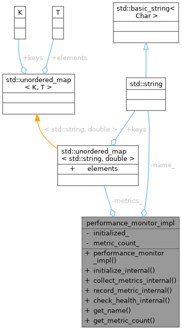
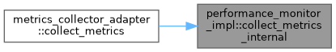
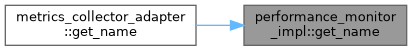
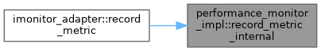

- Generated by
 1.12.0
1.12.0
|
Monitoring System 0.1.0
System resource monitoring with pluggable collectors and alerting
|

Public Member Functions | |
| performance_monitor_impl (const std::string &name) | |
| void | initialize_internal () |
| void | collect_metrics_internal () |
| void | record_metric_internal (const std::string &name, double value) |
| void | check_health_internal () const |
| std::string | get_name () const |
| int | get_metric_count () const |
Private Attributes | |
| std::string | name_ |
| bool | initialized_ = false |
| int | metric_count_ = 0 |
| std::unordered_map< std::string, double > | metrics_ |
Definition at line 89 of file facade_adapter_poc.cpp.
|
inlineexplicit |
Definition at line 91 of file facade_adapter_poc.cpp.
|
inline |
Definition at line 109 of file facade_adapter_poc.cpp.
References initialized_.
Referenced by imonitor_adapter::get_health().
|
inline |
Definition at line 99 of file facade_adapter_poc.cpp.
References metric_count_.
Referenced by metrics_collector_adapter::collect_metrics().

|
inline |
Definition at line 114 of file facade_adapter_poc.cpp.
References metric_count_.
Referenced by demonstrate_new_approach().
|
inline |
Definition at line 113 of file facade_adapter_poc.cpp.
References name_.
Referenced by metrics_collector_adapter::get_name().

|
inline |
Definition at line 94 of file facade_adapter_poc.cpp.
References initialized_, and name_.
Referenced by metrics_collector_adapter::initialize().
|
inline |
Definition at line 104 of file facade_adapter_poc.cpp.
References metrics_.
Referenced by imonitor_adapter::record_metric().

|
private |
Definition at line 118 of file facade_adapter_poc.cpp.
Referenced by check_health_internal(), and initialize_internal().
|
private |
Definition at line 119 of file facade_adapter_poc.cpp.
Referenced by collect_metrics_internal(), and get_metric_count().
|
private |
Definition at line 120 of file facade_adapter_poc.cpp.
Referenced by record_metric_internal().
|
private |
Definition at line 117 of file facade_adapter_poc.cpp.
Referenced by get_name(), and initialize_internal().